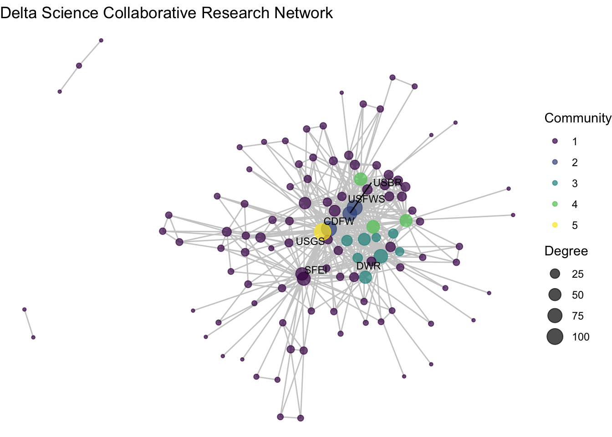
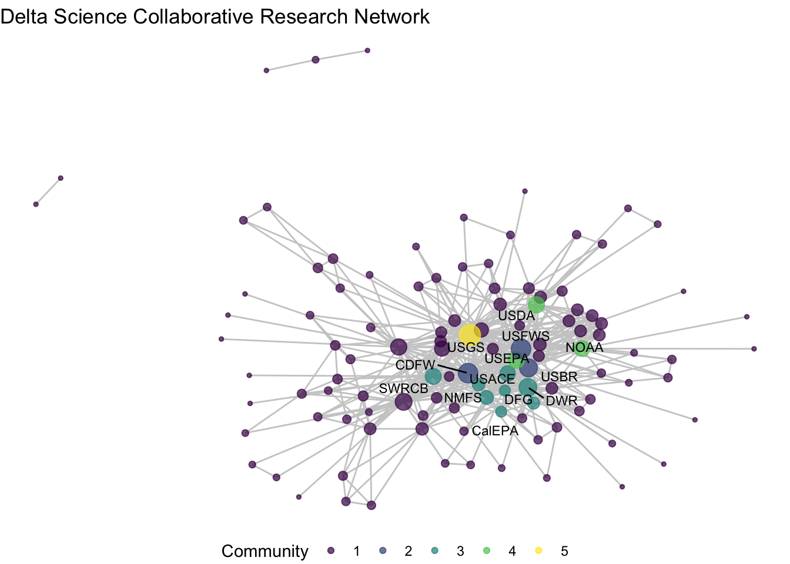
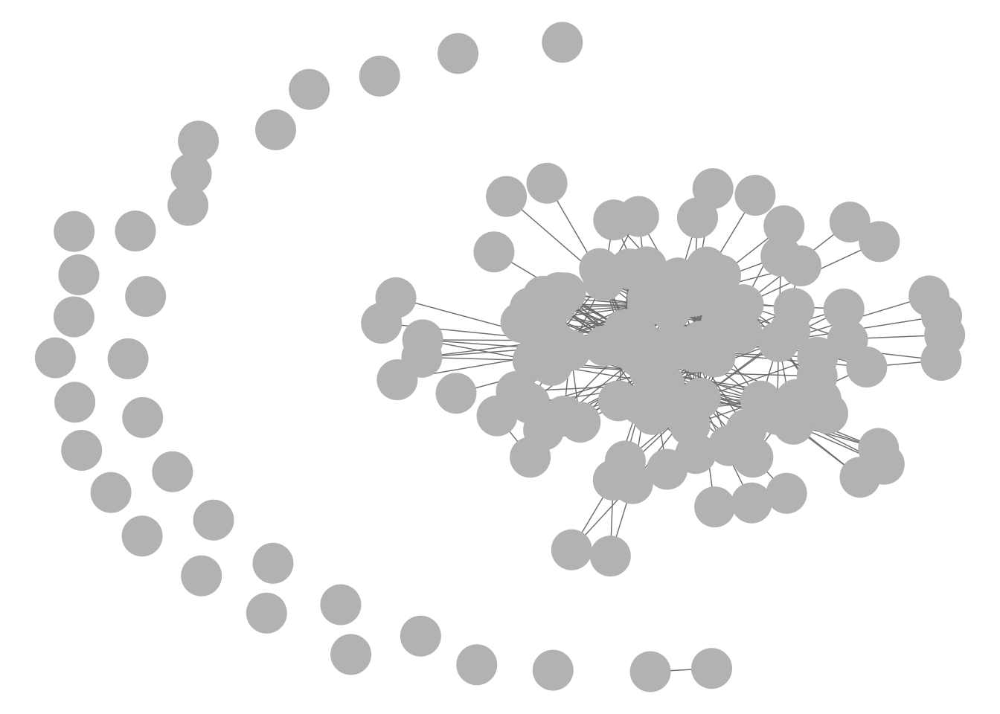
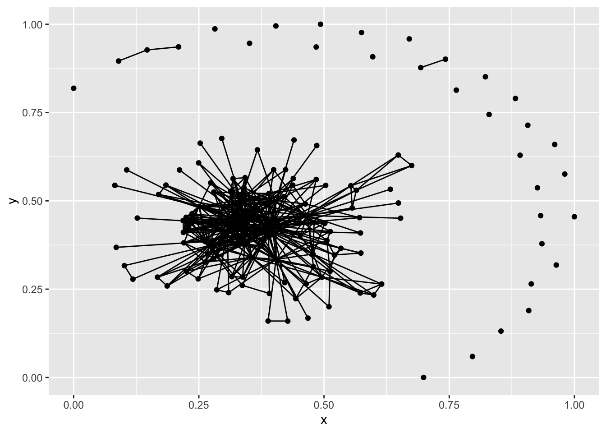
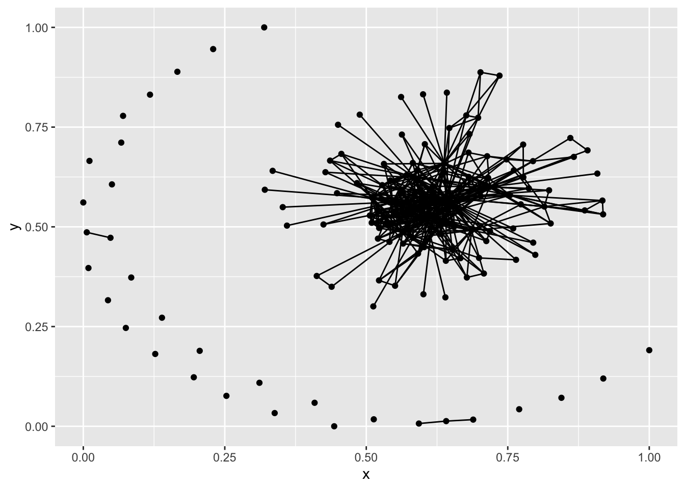

6 Supplemental material
6.1 Community detection
For some bonus work, let’s combine some network statistics with visualization to take a deeper look at the network structure. This bonus material extends our first guiding question by asking: Do we see any particular research communities emerge across these collaborations?
Often researchers are curious about whether or not there is some pattern within the network. Though the majority of the nodes are connected in one relatively dense component, are some organizations linking with others on a more regular basis? Is there a grouping trend in our network that we can’t see from the network figure on its own? To answer this, we might want to use some community detection approaches.
6.1.1 Algorithms for community detection
Broadly, community detection is an approach that employs a wide range of distance/clustering algorithms to identify to find connected communities within a network based on features like density/modularity. While we’ve moved away from igraph, I do want to point out that it has a number of community detection algorithms. You can read more about community detection algorithms here.
?igraph::cluster_walktrap()
?igraph::cluster_label_prop()
?igraph::cluster_fast_greedy()In the sna package there is the equivalence cluster (equiv.cluster) function, which identifies distances based on structural equivalence. The resource above, Hoffman et al. 2018, define it as follows: ‘Structural equivalence is an important concept from the blockmodeling literature. It is defined where two nodes play the exact same role in a network in terms of their edges, and would be considered interchangeable.’
?sna::equiv.clust()6.1.2 Equivalence clusters & block models
Equivalence clustering is a clustering method which groups nodes based on distance from one another. You can specify what kinds of clustering method to use with the cluster.method argument and what distance function to use with equiv.fun, but it by default uses a hierarchical clustering method based on structural equivalence using Hamming distance. We can calculate the distance and plot a dendrogram of the clusters.
ec <- equiv.clust(net1_noiso)
plot(ec)
Now that we have these clusters, we can turn to another method, blockmodelling, which will evaluate the density of node groupings (or ‘blocks’) estimated by the equivalence clusters. We can specify how may blocks we want (k), or specify a height at which to split the classes (h). We will pick a rather arbitrary number for blocks, k = 5.
bm <- blockmodel(net1_noiso, ec, k = 5, glabels = "DSC Collaboration")The block model output includes a vector assigning each node to a block through ‘block membership’. We can wrap this output in the table function to get a sense of how many nodes have been combined across the different blocks. Most of the nodes (97) are in block 1, while the remaning blocks are much smaller, and block 5 has only one node.
table(bm$block.membership)##
## 1 2 3 4 5
## 97 3 8 3 1Additionally, the block model itself provides a matrix with a density measure for the within and between block pairings. Looking along the diagonal, we see that the first block has very low density (0.03), but the smaller blocks have high within-block density (1, .89, 1), while there is no value for block 5 because the density cannot be calculated for a network of 1.
bm$block.model## Block 1 Block 2 Block 3 Block 4 Block 5
## Block 1 0.03436426 0.2852234 0.06958763 0.1718213 0.4329897
## Block 2 0.28522337 1.0000000 0.91666667 1.0000000 1.0000000
## Block 3 0.06958763 0.9166667 0.89285714 0.5000000 0.7500000
## Block 4 0.17182131 1.0000000 0.50000000 1.0000000 1.0000000
## Block 5 0.43298969 1.0000000 0.75000000 1.0000000 NaNWe can then assign the block membership to the network. It is worth noting, however, that the vector output of bm$block.membership does not maintain the same node order as the nodes in our network. So we want to make sure we reorder the membership vector to align with the vertex names, which are listed under bm$plabels.
6.1.3 Plotting block membership
membership <- data.frame("block" = bm$block.membership,
"vertex.names" = bm$plabels)
membership <- membership[order(membership$vertex.names),]
net1_noiso %v% 'membership' <- membership$blockggraph(net1_noiso, layout = 'fr') +
geom_edge_link(color = "gray80") +
geom_node_point(aes(size = degree, color = factor(membership)),
alpha = .7) +
theme_void() +
labs(title = "Delta Science Collaborative Research Network") +
geom_node_text(aes(label = labels),
size = 3,
repel = T) +
scale_color_viridis_d() +
labs(color = "Community", size = "Degree")
Let’s rethink our labels to get a better sense of who is in what group
# Like before, set a conditional statement so that we only have labels
# for nodes whose membership is in the dense nodes
net1_noiso %v% 'member_label' <- ifelse(net1_noiso %v% 'membership' %in% 2:5,
net1_noiso %v% 'name', "")We might also want to make a table of those so we can check it out
data.frame('block' =
(net1_noiso %v% 'membership')[net1_noiso %v% 'membership' %in% 2:5],
'name' = (net1_noiso %v% 'name')[net1_noiso %v% 'membership' %in% 2:5]) %>%
arrange(block)## block name
## 1 2 CDFW
## 2 2 USBR
## 3 2 USFWS
## 4 3 DWR
## 5 3 CalEPA
## 6 3 SWRCB
## 7 3 Delta Stewardship Council - Delta Science Program
## 8 3 DFG
## 9 3 East Bay Municipal Utilities District
## 10 3 NMFS
## 11 3 USACE
## 12 4 NOAA
## 13 4 USDA
## 14 4 USEPA
## 15 5 USGSiso_net <- ggraph(net1_noiso, layout = 'fr') +
geom_edge_link(color = "gray80") +
geom_node_point(aes(size = degree, color = factor(membership)),
alpha = .7) +
theme_void() +
labs(title = "Delta Science Collaborative Research Network") +
geom_node_text(aes(label = member_label),
size = 3,
repel = T) +
scale_color_viridis_d() +
labs(color = "Community", size = "Degree")
iso_net## Warning: ggrepel: 2 unlabeled data points (too many overlaps). Consider
## increasing max.overlapsAnd what if I want to clean this up, say, have only one legend and move the legend below. We can specify which legends we want with guides() and put the legend in the ‘bottom’ position with themes().
iso_net +
labs(color = "Community", size = "Degree") +
guides(color = "legend", size = "none") +
theme(legend.position = "bottom")## Warning: ggrepel: 2 unlabeled data points (too many overlaps). Consider
## increasing max.overlaps
To conclude this section we can revisit the question we set out in this supplemental code: Do we see any particular research communities emerge across these collaborations?
We’ve used the blockmodel function, paired with more conditional assignments of network attributes to identify some possible research clusters. Among our five ‘blocks’ we see high density among three of them: blocks 2, 3, and 4. Block 2 includes three of the most central nodes – CDFW, USBR, USFWS – suggesting that these three wild-life and land use agencies at the state and federal levels repeatedly collaborate together in the Delta. Block 3 includes a wider variety of state agencies that are closely clustered. And block 4 has only three federal agencies, USDA, EPA, and NOAA, who much like block 2 seem to be consistently collaborating on science projects. Block 5 includes only USGS, the network’s most central node, pointing to the challenge of clustering highly central nodes given that they span so many connections. The remainder of the organizations are grouped into Block 1, a low-density mass that have no clear trend towards clustering.
6.2 Other plotting packages and functionality
There are several plotting packages out there, some of them work with different network objects and requiring different knowledge. Excellent overviews of some of them are provided in this post by Katya Ognyanova. I won’t need to repeat these, but it is worth seeing the basic representation and understanding how igraph vs. network objects look differently in them, by default.
6.2.1 plot()
Base R plotting works with network and igraph objects, though their defaults for each object are different.
plot(net1)
plot(g1)6.2.2 GGally::ggnet2()
The ggnet2 function is also dynamic, but despite being housed as part of the GGally extension of the ggplot2 series it seems to function more like a base R plot. For this function, igraph and network objects look the same.
GGally::ggnet2(net1)
GGally::ggnet2(g1)
6.2.3 ggnetwork::ggnetwork()
Very similar to ggraph and also an extension of the ggplot family is the ggnetwork function. This function integrates directly with ggplot2 and specifies the default coordinates of ggraph, but otherwise operates quite similarly. For this function, igraph and network objects look the same.
library(ggplot2)
library(ggnetwork)
ggplot(net1, aes(x = x, y = y, xend = xend, yend = yend)) +
geom_nodes() +
geom_edges()
ggplot(g1, aes(x = x, y = y, xend = xend, yend = yend)) +
geom_nodes() +
geom_edges()
6.2.4 visNetwork
visNetork doesn’t take network objects themselves, but instead requires some specific naming conventions for edges and nodes as its main inputs.
#install.packages('visNetwork')
library(visNetwork)
edges_visnet <- edges_1mode
colnames(edges_visnet)[c(1,2)] <- c('from', 'to')
nodes_visnet <- nodes_1mode
colnames(nodes_visnet)[2] <- 'label'
visNetwork(nodes_visnet, edges_visnet, width="100%", height="400px")6.2.5 networkD3
networkD3 runs on JavaScript and also requires some reconfiguring of nodes and edges, but can be a good tool for embedding in websites or apps.
#install.packages('networkD3')
library(networkD3)
nodesd3 <- nodes_1mode[1]
nodesd3$zero_id <- 0:(nrow(nodesd3)-1)
edgesd3 <- edges_1mode
edgesd3 <- dplyr::left_join(edgesd3, nodesd3, by = c('from_org_id' = 'id'))
colnames(edgesd3)[7] <- 'from_zero_id'
edgesd3 <- dplyr::left_join(edgesd3, nodesd3, by = c('to_org_id' = 'id'))
colnames(edgesd3)[8] <- 'to_zero_id'
nodesd3$name <- nodes_1mode$name
forceNetwork(Links = edgesd3, Nodes = nodesd3,
Source="from_zero_id", Target="to_zero_id",
NodeID = "name", Group = 1, linkWidth = 1,
linkColour = "#afafaf", fontSize=12, zoom=T,
opacity = 0.8, charge=-300,
width = 600, height = 400)